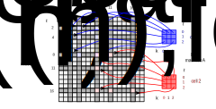

We are now ready to assemble the stiffness matrix \(A^{(h)}\) and the right hand side vector \(\boldsymbol{b}^{(h)}\) which define the linear system \[ A^{(h)} \boldsymbol{u}^{(h)} = \boldsymbol{b}^{(h)}. \] With knowledge of the dof-vector \(\boldsymbol{u}^{(h)}\) we can reconstruct the finite element solution \(u_h(x) = \sum_{\ell=0}^{n-1} u^{(h)}_\ell \Phi^{(h)}_\ell(x)\). Recall that the entries of the right hand side vector and stiffness matrix are given by \(b^{(h)}_\ell:=b(\Phi^{(h)}_\ell)\) and \(A^{(h)}_{\ell k}:= a\left(\Phi^{(h)}_\ell,\Phi^{(h)}_k\right)\).
Since \(b(v) = \int_\Omega f(x)v(x)\;dx\) we compute the entries of the vector \(b^{(h)}\) by splitting the integral over the domain \(\Omega\) into the sum of integrals over the cells \(K\): \[ \begin{aligned} b^{(h)}_{\ell_{\text{global}}} &= \int_\Omega f(x) \Phi_{\ell_{\text{global}}}(x)\;dx\\ &= \sum_{K\in \Omega_h} \int_K f(x) \Phi_{\ell_{\text{global}}}(x) \; dx\\ \end{aligned} \] If \(i\) is the index of cell \(K\), we can identify the global index \(\ell_{\text{global}}\) with the corresponding cell-local index \(\ell\), transform variables to integrate over the reference cell \(\widehat{K}\) and write \[ \begin{aligned} b^{(h)}_{\ell_{\text{global}}} &= \sum_{K\in \Omega_h}\int_{\widehat{K}} \widehat{f}_K(\widehat{x}) \phi_\ell(\widehat{x})\;|\det{J}(\widehat{x})|\;d\widehat{x} \end{aligned} \] where \(\widehat{f}_K(\widehat{x}) := f(x)\). Note that for degrees of freedom which are shared between neighbouring cells, there can be contributions different cells since several \((i,\ell)\) can correspond to the same \(\ell_{\text{global}}\).
Next, replace the integration by numerical quadrature and use the tabulated basis functions \(T_{q\ell}=\phi_\ell(\xi^{(q)})\) to obtain \[ \begin{aligned} b^{(h)}_{\ell_{\text{global}}} &\approx \sum_{K\in \Omega_h} \sum_q w_q \widehat{f}_K(\xi^{(q)}) \phi_\ell(\xi^{(q)})\;|\det{J}(\xi^{(q)})|\\ &= \sum_{K\in \Omega_h} \sum_q w_q \widehat{f}_K(\xi^{(q)}) T_{q\ell}\;|\det{J}(\xi^{(q)})|. \end{aligned} \] To evaluate the cell-local function \(\widehat{f}_K\) at the quadrature point we need to work out the global coordinate \(x_K^{(q)}\) which corresponds to this point and use \[ \widehat{f}_K(\xi^{(q)}) = f(x_K^{(q)}) \] Next, we use the fact that in each cell \(x_K\) can be expanded in terms of vector-valued basis functions as \[ (x_K^{(q)})_a = (X_K(\xi^{(q)}))_a = \sum_{\ell^\times} (\phi^\times_{\ell^\times}(\xi^{(q)}))_a X_{\ell^\times_{\text{global}}} = \sum_{\ell^\times} T^\times_{q\ell^\times a} \overline{X}_{\ell^\times} \] where \(\ell^\times_{\text{global}}\) is the global dof-index of the coordinate field which corresponds to the cell index \(i\) and the local dof-index \(\ell^\times\). \(\overline{\boldsymbol{X}}\) is the cell-local dof-vector with \(\overline{X}_{\ell^\times} = X_{\ell_{\text{global}}^\times}\).
The Jacobian is given by \[ J_{ab}(\xi^{(q)}) = \frac{\partial (x_K^{(q)})_a }{\partial x_b} = \frac{\partial (X_K)_a }{\partial x_b}(\xi^{(q)}) = \sum_{\ell^\times} X_{\ell^\times_{\text{global}}} \frac{\partial (\phi^\times_{\ell^\times})_a }{\partial x_b}(\xi^{(q)}) = \sum_{\ell^\times} \overline{X}_{\ell^\times} T^{\times\partial}_{q\ell^\times ab} \] Putting everything together, we arrive at the following procedure:
The following figure visualises the assembly of the global vector
\(\boldsymbol{b}^{(h)}\). The two cells
have global indices \(\ell_{\text{global}}=[2,4,8]\) and \(\ell_{\text{global}}=[8,11,16]\)
respectively. Note that both cells contribute to the global vector entry
\(b^{(h)}_8\).
The summation \(\sum_q w_q F_q T_{q\ell}
D_q\) of the local vector entries can be realised with numpy’s einsum()
method.
To insert the entries of the local vector \(\boldsymbol{b}^{(h),\text{local}}\) into the global vector \(\boldsymbol{b}^{(h)}\) we can use slicing notation, i.e. write
b_h[ell_global] = b_h_local[:]where ell_global is the list of global dof-indices that
correspond to the local dof-indices in the cell. In the code, this list
can be constructed as
ell_global = fs.local2global(i,range(ndof))In this expression fs is a FunctionSpace
object and ndof is the number of local unknowns in each
cell.
To assemble the stiffness matrix, we again split the integral into a sum of integrals over grid cells \(K\): \[ \begin{aligned} A^{(h)}_{\ell_{\text{global}},k_{\text{global}}} &= \int_\Omega \left(\kappa \nabla \Phi^{(h)}_{\ell_{\text{global}}}(x) \cdot\nabla\Phi^{(h)}_{k_{\text{global}}}(x)+\omega \Phi^{(h)}_{\ell_{\text{global}}}(x)\Phi^{(h)}_{k_{\text{global}}}(x)\right)dx\\ &= \sum_{K\in\Omega_h}\int_K \left(\kappa \nabla \Phi^{(h)}_{\ell_{\text{global}}}(x) \cdot\nabla\Phi^{(h)}_{k_{\text{global}}}(x)+\omega \Phi^{(h)}_{\ell_{\text{global}}}(x)\Phi^{(h)}_{k_{\text{global}}}(x)\right)dx \end{aligned} \] Next, we change variables in each cell to convert the integrals into integrals over the reference cell \(K\). For this, note that the global basis functions and their derivatives transform as follows: \[ \begin{aligned} \Phi^{(h)}_{\ell_{\text{global}}}(x) &= \phi_\ell(\widehat{x})\\ \nabla \Phi^{(h)}_{\ell_{\text{global}}}(x) &= J^{-\top}(\widehat{x}) \widehat{\nabla}\phi_\ell(\widehat{x}) \end{aligned} \] Here \(\ell_{\text{global}}\) is the global dof-index that is associated with the local dof-index \(\ell\) in the cell with index \(i\). The second identity can be easily verified by using the chain rule. With this we find \[ \begin{aligned} A^{(h)}_{\ell_{\text{global}},k_{\text{global}}} &= \sum_{K\in \Omega_h}\int_K \left(\kappa J^{-\top}(\widehat{x}) \widehat{\nabla} \phi_\ell (\widehat{x})\cdot J^{-\top}(\widehat{x})\widehat{\nabla}\phi_k(\widehat{x}) + \omega\phi_\ell(\widehat{x})\phi_k(\widehat{x})\right)|\det{J}(\widehat{x})|d\widehat{x}. \end{aligned} \] Next, approximate the integrals by numerical quadrature and use the tabulated basis functions \(T_{q\ell} = \phi_\ell(\xi^{(q)})\), \(T^\partial_{q\ell a} = \frac{\partial\phi_\ell}{\partial \widehat{x}_a}(\xi^{(q)})\) to obtain \[ \begin{aligned} A^{(h)}_{\ell_{\text{global}},k_{\text{global}}} &\approx \sum_{K\in \Omega_h}\int_K w_q \left(\kappa \widehat{\nabla} \phi_\ell(\xi^{(q)})(J^{\top}(\xi^{(q)}) J(\xi^{(q)}))^{-1}\phi_k(\xi^{(q)}) + \omega\phi_\ell(\xi^{(q)})\phi_k(\xi^{(q)})\right)|\det{J}(\xi^{(q)})|d\widehat{x} \\ &= \sum_{K\in \Omega_h} \sum_q w_q \left(\kappa T^\partial_{q\ell a}(J^{(-2)}_q)_{ab} T^\partial_{qkb} +\omega T_{q\ell}T_{qk}\right)|\det{J}(\xi^{(q)})| \end{aligned} \] with the \(2\times 2\) matrix \[ J^{(-2)}_{q} = \left(J^{\top}(\xi^{(q)}) J(\xi^{(q)})\right)^{-1} = \left(J^{(2)}\right)^{-1}. \] The value \(J(\xi^{(q)})\) of the Jacobian at the quadrature points can be computed as above.
Putting everything together we arrive at the following procedure:
The following figure visualises the assembly of the stiffness matrix \(A^{(h)}\). The two cells have global indices \(\ell_{\text{global}}=[2,4,8]\) and \(\ell_{\text{global}}=[8,11,16]\) respectively. Note that both cells contribute to the global matrix entry \(A^{(h)}_{8,8}\). 
Again, the summation \(\sum_{c}
J_{qca}J_{qcb}\) to compute the matrix entries of \(J^{(2)}_q\) and the sums \(\sum_{qab}w_q T^\partial_{q\ell
a}(J^{(2)}_q)_{ab} T^\partial_{qkb} D_q\), \(\sum_{q}w_q T_{q\ell}T_{qk} D_q\) required
for the construction of the local matrix entries can be realised with
numpy’s einsum()
method.
To insert the entries of the local stiffness matrix \(A^{(h),\text{local}}\) into the global
stiffness matrix \(A^{(h)}\) we can
again use slicing notation. Naively, one would expect to be able to do
this with A_h[ell_global, ell_global] += A_h_local[:,:]
where ell_global = fs.local2global(i,range(ndof)) as above.
however this does not work since we first need to construct the
“product” \(\ell_{\text{global}}\times
\ell_{\text{global}}\) before we can use this to slice a matrix.
This can be done with the numpy ix_()
method, i.e. write
A_h[np.ix_(ell_global, ell_global)] += A_h_local[:,:]The final operation we need is interpolation of a given function \(u\) onto a function \(u^{(h)}=\mathcal{I}_h(u)\in V_h\) such that \(u^{(h)}\approx u\). This can be achieved by setting the entries of the dof-vector \(\boldsymbol{u}^{(h)}\) which represents \(u^{(h)}\) to \[ u^{(h)}_{\ell_{\text{global}}} = \lambda^{(h)}_{\ell_{\text{global}}}(u) \] where \(\lambda^{(h)}_{\ell_{\text{global}}}\) is the degree of freedom with index \(\ell_{\text{global}}\). To see why this is a sensible definition, consider the case where \(f=u^{(h)}\in V_h\), i.e. \[ u^{(h)}(x) = \sum_{\ell_{\text{global}}} u^{(h)}_{\ell_{\text{global}}} \Phi^{(h)}_{\ell_{\text{global}}}(x) \] then \[ \begin{aligned} \lambda^{(h)}_{\ell_{\text{global}}}\left(\sum_{k_{\text{global}}} u^{(h)}_{k_{\text{global}}} \Phi^{(h)}_{k_{\text{global}}}(x)\right) &= \sum_{k_{\text{global}}} u^{(h)}_{k_{\text{global}}} \lambda^{(h)}_{\ell_{\text{global}}}\left( \Phi^{(h)}_{k_{\text{global}}}(x)\right)\\ &= \sum_{k_{\text{global}}} u^{(h)}_{k_{\text{global}}} \delta_{\ell_{\text{global}},k_{\text{global}}}\\ &= u^{(h)}_{\ell_{\text{global}}}. \end{aligned} \] In other words, the interpolation operation returns the same function: \[ u^{(h)} \in V_h \quad\Rightarrow\quad \mathcal{I}_h(u^{(h)}) = u^{(h)} \] Observe in particular that if \(\lambda^{(h)}_{\ell_\text{global}}\) correspond to point evaluations \(\lambda^{(h)}_{\ell_\text{global}}(u) = u(x_{\ell_{\text{global}}})\), then we have that \[ u^{(h)}(x_{\ell_{\text{global}}}) = u(x_{\ell_{\text{global}}}). \] Again, we implement the global interpolation by looping over all cells and using the local assembly operation. For this, we construct a function \(\widehat{u}_K(\widehat{x})=u(x)\) on each cell and compute \[ u^{(h)}_{\ell_{\text{global}}} = \lambda_\ell (\widehat{u}_K) \] with the cell-local degrees of freedom \(\lambda_\ell\) on the reference cell \(\widehat{K}\). The function \(\widehat{u}_K(\widehat{x})\) is given by \[ \widehat{u}_K(\widehat{x}) = u\left(\sum_{\ell^\times}\overline{X}_{\ell^\times} \phi^\times_{\ell^\times}(\widehat{x})\right) \] This leads to the following procedure:
It is possible to derive bounds for the difference \(u-\mathcal{I}_h(u)\), which in general depend on the particular choice of finite element discretisation. We will only present one result here, which applies to piecewise polynomial finite elements of degree \(p\). There is a constant \(D\), independent of \(h\) such that
\[ \|u-\mathcal{I}_h(u)\|_{L_2(\Omega)} \le D h^{p+1} \|u\|_{H^{p+1}(\Omega)} \] where \(h\) is the maximum diameter of all grid cells and \(\|\cdot \|_{H^{p+1}(\Omega)}\) is a suitable norm that we will not discuss further here. Crucially, the interpolation error descreases with a power of the grid spacing and higher-order discretisations lead to smaller interpolation errors. See Section 11 of Patrick Farrell’s excellent lecture notes on Finite element methods for more details.
It should be stressed, however, that in general interpolation is not the same as \(L_2(\Omega)\) projection, i.e. \[ \mathcal{I}(u) \neq \argmin_{v^{(h)}\in V_h} \|u-v^{(h)}\|_{L_2(\Omega)} \]